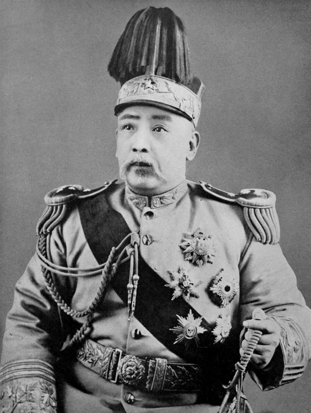

袁世凱
共和破壞者與現代化的奠基人
在國民黨教科書中，他被簡化為「竊國大盜」與簽署二十一條的「賣國賊」。然而客觀審視歷史，他不僅在辛亥革命時避免了全面內戰，更在軍事、貨幣與教育上奠定了中國現代化的基礎。他最終的敗亡，是缺乏民主素養的傳統強人，在權力傲慢下的必然悲劇。
📂 檔案閱覽室
真實史實：歷史現場的另一面
點擊下方卡片，對比傳統歷史課本與被掩蓋的歷史真相。
歷史課本說：袁世凱為了當皇帝，毫無底線地接受了日本喪權辱國的「二十一條」，是個純粹的賣國賊。
點擊解密檔案 ➔解密真相：當時中國陸軍彈藥僅能支撐48小時。袁世凱極度震怒但只能靠「拖延戰術」周旋，並暗中將機密洩露給英美引發國際干涉。最終他迫使日本放棄了最致命、企圖全面控制中國內政外交的「第五號條款」，保全了國家實體。
點擊翻回課本歷史課本說：袁世凱是靠武力恐嚇革命黨，卑鄙地「竊取」了辛亥革命的果實。
點擊解密檔案 ➔解密真相：當時南方革命軍在軍事與財政上皆處於崩潰邊緣。是袁世凱憑藉在北洋軍的威望，逼迫清帝和平退位。這項政治妥協極大降低了流血衝突，避免了列強趁機武裝干涉與瓜分中國。
點擊翻回課本人物列傳

袁世凱
(1859 - 1916)
國家現代化推手破舊立新：民國肇建與制度現代化
避免全面內戰的和平過渡： 1911年辛亥革命爆發，南方革命軍面臨嚴峻的財政與軍事劣勢。袁世凱憑藉在北洋軍中的威望與政治手腕，成功促成清帝和平退位。這一妥協極大地降低了政權更迭的流血衝突，避免了列強武裝干涉與領土瓜分，為中華民國保留了相對完整的版圖基礎。
軍事與經濟的現代化奠基： 他主導「小站練兵」，全盤引進德國軍制，徹底終結了中國傳統封建世襲軍制，創建了第一支現代國防軍。在經濟上，他於1914年頒布《國幣條例》，發行統一的「袁大頭」銀元，成功驅逐市場劣幣，穩固了國家金融信用，大幅推動了近代民族資本主義的發展。
推動現代教育與普及： 早在晚清他就積極推動廢除科舉。民國初年，袁政府致力於教育制度現代化，頒布法令實施義務教育、倡導師範教育與教科書標準化，為民國時期的知識普及奠定了硬體與制度基礎。
袁世凱
(1859 - 1916)
強人政治與外交防禦弱國外交防線與「法治」的崩潰
「二十一條」交涉的歷史真相： 面對日本趁一戰之危提出的條款，在國防軍隊「只能支撐48小時」的絕境下，袁世凱極度震怒並親自掌控談判。他施展極致的拖延戰術，並暗中將機密洩露給英美施壓。最終他被迫妥協了部分經濟權益，但死守底線，堅決拒絕了最致命、企圖全面剝奪中國內政外交自主權的「第五號」條款，保全了國家實體。
民主的脆弱與超級總統制： 1913年宋教仁遇刺案徹底摧毀了初創的政治互信。面對國會《天壇憲草》試圖將總統權力徹底虛位化的極端限制，缺乏民主妥協精神的袁世凱選擇動用武力，解散國會並廢除《臨時約法》，建立了類似拉丁美洲軍事獨裁的「超級總統制」，犧牲了政權長期的合法性。
洪憲帝制與人治的迷信： 袁世凱本質上仍是傳統威權統治者。在當時部分知識分子（如籌安會）對共和亂象失望、呼籲「人治」的氛圍下，他迷信強人政治能帶來穩定，悍然發動「洪憲帝制」。這不僅逆歷史潮流，更遭到了全國乃至北洋嫡系的背棄，最終僅83天便在眾叛親離中草草收場。
📚 關鍵參考史料
- 唐德剛，《袁氏當國》
- Patrick Fuliang Shan，《Yuan Shikai: A Reappraisal》
命運結算
你的最終歷史定位：